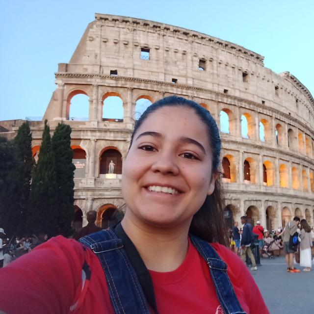

Teléfono: (+595) 985 819956
Email: erikanathaliabogado@gmail.com

| 2024 - 2026 | Desarrollador en CLYFSA
Desarrollador Full Stack Oracle enfocado en Application Express (APEX), integrando bases de datos PL/SQL con interfaces de usuario modernas (JavaScript/CSS) para optimizar la gestión de datos corporativos. |
| 2026 - Actualmente | CCNA3: Redes empresariales seguridad y automatización
Universidad Nacional de Asunción - Facultad Politécnica, filial Villarrica. |
| 2022 - Actualmente | Licenciatura en ciencias informáticas
Universidad Nacional de Asunción - Facultad Politécnica, filial Villarrica. |
| 2025 | CCNA1: Introducción a las Redes
Universidad Nacional de Asunción - Facultad de ingeniería |
| 2025 | CCNA2: fundamentos de conmutación enrutamiento y redes inalámbricas
Universidad Nacional de Asunción - Facultad de ingeniería |
| 2019 | Curso de actualización de Diseño Gráfico
Dirección de Posgrado e investigación de la Universidad Católica Nuestra Señora de la Asunción - Campus Guairá |
| 2014 - 2021 | Bachillerato científico con énfasis en ciencias básicas
Colegio María Auxiliadora, Villarrica |